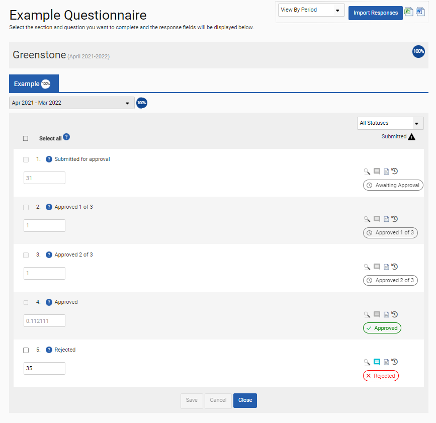

GSE-423: In Frameworks ‘Inputs’ and ‘Approvals’, users can now filter questions by approval status.
To support this, on the ‘Inputs’ and ‘Approvals’ screens, a new drop-down box with the following statuses is now provided: Awaiting Approval, Data Input, Approved, and Rejected.
For the drop-down box to display, the user must select ‘View By Period’.
Also on the Frameworks ‘Inputs’ and ‘Approvals’ screens, for each question a new icon at the right now shows the current approval status for the question response.

When a user attempts to update an existing question in the custom question library, create a new question in the custom question library using the UI, or create new questions using the bulk import functionality (with a Microsoft Excel file), if a non-unique KPI reference is added to a question, an error message stating that the KPI reference must be unique will now be generated. For uploads, the entire upload will fail.